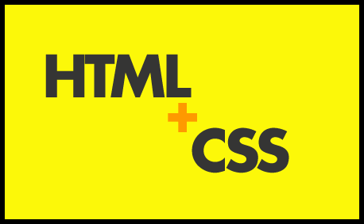

入一行，要先知一行 ”；我们来看看web前端开发职位 无论什么门派都要做到的一些基本工作职责
首先，你必须是一个合格的“页面仔”，这个叫法不好听，但很生动；
我们都知道，所有呈现的内容都是基于HTML 网页的。
如果你的html、css（包括现在的HTML5+CSS3）基础不会，或者不够扎实，都很难在有大的进步，或者你的JS 很好，但布局基础不行，还是不能算合格的web前端。
其次，前端主要负责实现视觉和交互功能，以及与后端服务器通信，完成业务逻辑。现在前端的核心价值在于对用户体验的极致追求。
那么我们靠什么来提升用户体验和人性化操作，让用户觉得体验牛x、舒服呢？（当然细分厉害的公司，会有专门的 用户体验攻城狮）
当然是我们自始自终的主角 JavaScript了，毕竟它最初就是为浏览器而生的脚本语言。

然而，JS这门语言并不是一种强类型语言，更像是一种解释型语言，所以很多属性，在不同的浏览器环境解释有很大不同导致，效果和性能千差万别，而且很多属性之长，之多，之巨都很有工作量。
之后，就出现了Jquery 这种的框架神器，由于其好用，简单，效果多样，兼容完美，高效率等特性，迅速席卷全世界，所以如果想入门，jquery 这个东西你是逃不掉的，而且利用它简单的语法，你会很快将一些效果实现出来，迅速提升兴趣。
再后，既然涉及到视觉 和用户体验，那么UI 设计知识，你肯定要涉及或者懂一些设计方面的技能和基本素养，比如PS的一些基本操作，切图，和颜色值（比如会改个字，隐藏个图层，改个尺寸，变个颜色什么滴），屏幕适配方案等，讲道理说：平时并不需要我们做，但技能包里绝对要有。如果大家对于学习web前端有任何问题（学习方法，学习效率，如何就业），可以随时来咨询我，这是我的web前端交流学习qun：前面是四八四，中间七五七，最后七六零，多多交流问题，互帮互助，里有学习教程和开发工具
最后，服务器知识+后端语言基础，这个职责和话题就比较hight了，到后面我们会一一解释。
总之，web前端同样是程序员，由于前端是位于后端程序和界面设计师之间的岗位，相当于中间桥梁，要完成三者的对接，涉及到广泛 的知识，规模大到工程级，也就有了前端工程师的说法（某人总结，很是到位）。
web前端工程师，是一个要精通本职html,css,javascript，也要了解后端编程，了解界面设计，了解软件工程的综合人才。
（卧擦！这才入门，web前端就这么多职能 和掌握的基本技能，不开森了 ，哼！）
哈哈，看到这一大篇的职责和技能，你并不要害怕，因为这些就像小孩子，会走路，会说话。
只要你有兴趣，只要有人领路，有教程自然而然就能掌握的技能，至于一些设计素养，反正你不是UI，有最好，没有又有什么所谓呢？